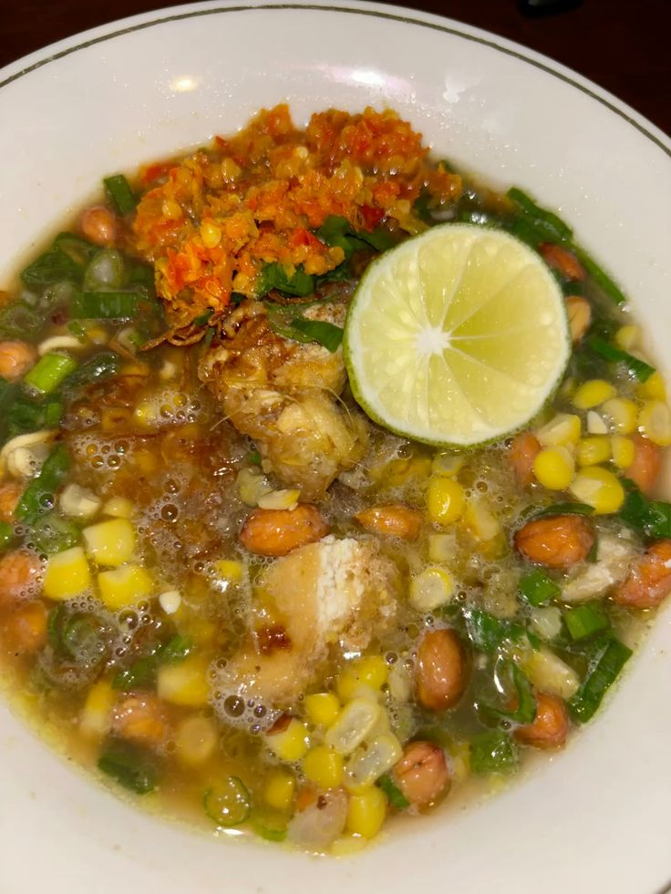

Daftar Masakan Favorit
| Nama Masakan | Bahan Utama | Bumbu Pelengkap |
|---|---|---|
| Binthe Biluhuta | Jagung, ikan atau udang, kelapa | Cabai, bawang merah, bawang putih, jeruk nipis, garam |
| Ayam Iloni | Ayam, santan | Cabai, bawang merah, bawang putih, kunyit, jahe, lengkuas |
| Bilenthango | Ikan mujair atau nila | Cabai, bawang merah, bawang putih, kunyit, jahe, tomat, garam |
| Sambal Sagela | Ikan sagela asap | Cabai, bawang merah, tomat, jeruk nipis, garam |
